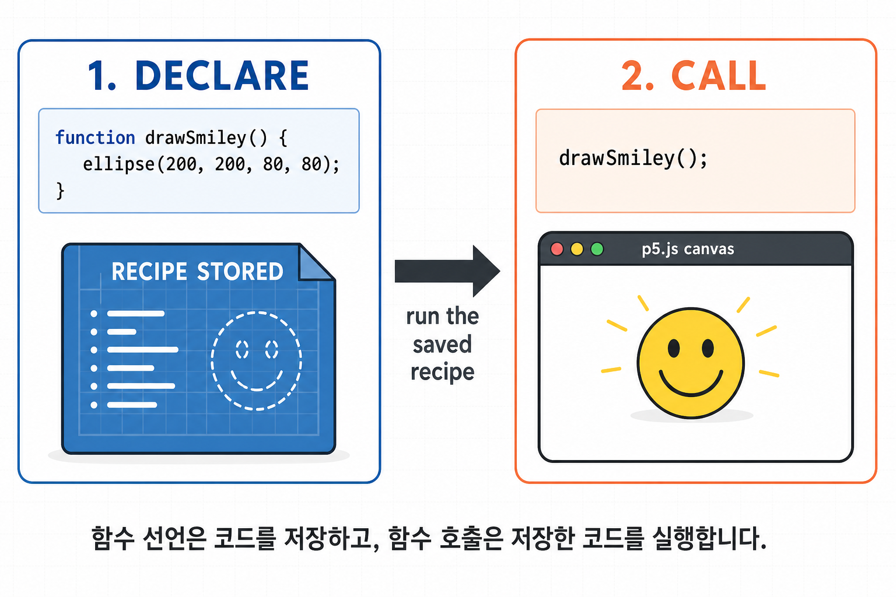
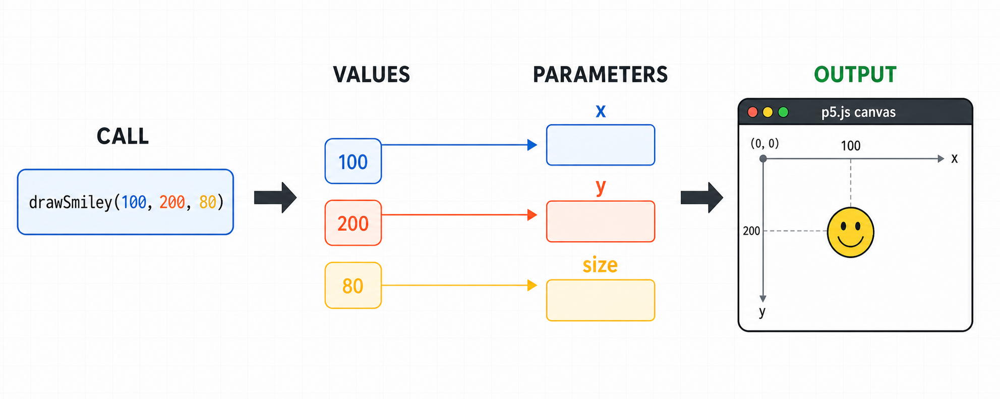
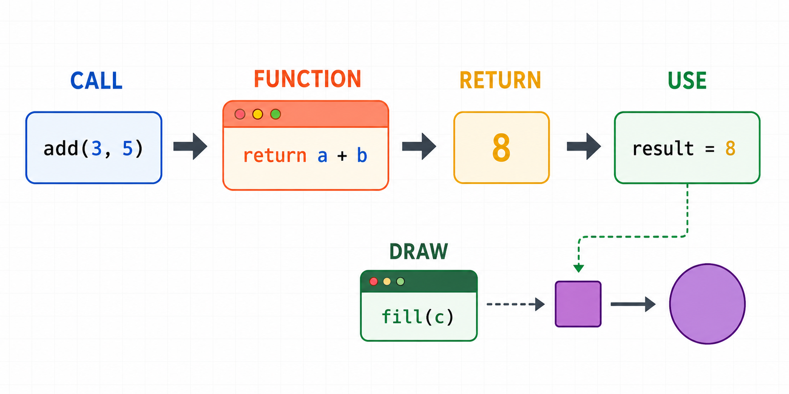
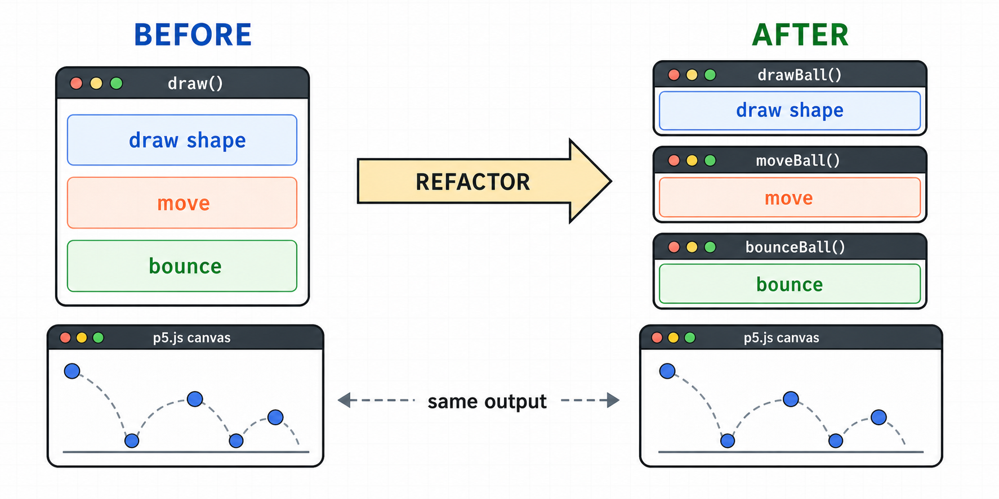

6주차 1교시 — 사용자 정의 함수: 코드를 정리하는 도구
강의 아웃라인: week-06-outline 다음 교시: week-06-period2-student (배열: 데이터를 한꺼번에 관리하자)
| 항목 | 내용 |
|---|---|
| 대상 | P5.js 입문자 (테크아트 전공) |
| 소요 시간 | 45분 |
| 핵심 도구 | P5.js Web Editor |
- ✅ 사용자 정의 함수를 선언하고 호출할 수 있습니다
- ✅ 매개변수를 활용하여 재사용 가능한 함수를 만들 수 있습니다
- ✅ 반환값(
return)의 개념을 이해하고 활용할 수 있습니다 - ✅ 5주차 바운싱 볼 코드를 함수로 리팩토링할 수 있습니다
도입
5주차 연결 — 코드가 길어지는 문제
5주차에서 만든 바운싱 볼은 원 하나가 화면 안에서 튕기는 코드였습니다. 그런데 공 2개를 만들려면 같은 코드를 복사-붙여넣기 해야 합니다.
let x1, y1, speedX1, speedY1;
let x2, y2, speedX2, speedY2;
function draw() {
background(220);
// 공 1
ellipse(x1, y1, 50, 50);
x1 += speedX1;
y1 += speedY1;
if (x1 > width || x1 < 0) speedX1 *= -1;
if (y1 > height || y1 < 0) speedY1 *= -1;
// 공 2 — 같은 코드를 복사-붙여넣기!
ellipse(x2, y2, 50, 50);
x2 += speedX2;
y2 += speedY2;
if (x2 > width || x2 < 0) speedX2 *= -1;
if (y2 > height || y2 < 0) speedY2 *= -1;
}직접 해보기 — 공 색깔을 바꿔보세요
- 위 공 2개 코드를 에디터에 넣고 실행하세요.
- 공의 크기를 50에서 30으로 바꿔보세요. —
ellipse(x1, ...)와ellipse(x2, ...)두 군데를 다 바꿔야 합니다. - 공 3개로 만들어보세요. — 변수 12개, 같은 코드 3번 반복.
공 10개면 변수 40개에 같은 코드 10번 복사. ‘같은 걸 반복하고 있다’ — 이 느낌이 들면, 그게 바로 함수가 필요하다는 신호입니다.
사실 우리는 이미 함수를 쓰고 있다
함수라는 단어가 낯설 수 있지만, 우리는 1주차부터 매주 함수를 쓰고 있었습니다.
| 우리가 쓰고 있는 함수 | 하는 일 |
|---|---|
setup() |
초기 설정 (P5.js가 자동 호출) |
draw() |
매 프레임 실행 (P5.js가 자동 호출) |
ellipse(x, y, w, h) |
원 그리기 |
fill(r, g, b) |
색상 채우기 |
random(min, max) |
랜덤 숫자 생성 |
ellipse()라고 부르면 내부적으로 원을 그리는 코드가 수십
줄 실행됩니다. 우리는 그 코드를 몰라도 ellipse()라는
이름만 불러서 원을 그릴 수 있었습니다. 이번 시간에는
내가 만드는 함수를 배웁니다.
💡 핵심 개념 1 — 함수 = 이름 붙인 코드 묶음
비유: 레시피(조리법)
| 요리 | 프로그래밍 |
|---|---|
| 레시피를 노트에 적어둔다 | 함수를 만든다 (선언) |
| “볶음밥 해줘”라고 말한다 | 함수를 부른다 (호출) |
| 재료를 바꾼다 (김치/새우) | 매개변수를 바꾼다 |
| 완성된 요리가 나온다 | 반환값이 돌아온다 |
레시피를 한 번 적어두면 누가 언제든 그대로 만들 수 있습니다. 함수는 이름 붙인 코드 묶음이에요. 한 번 만들어두면 이름만 불러서 몇 번이든 실행할 수 있습니다.
함수 만드는 문법
function 이름() {
실행할 코드
}setup()과 완전히 같은 모양입니다.
우리는 이미 setup, draw라는 함수를 만들 줄
압니다. 이제 원하는 이름으로 함수를 만들어봅니다.
나만의 함수 만들기
function setup() {
createCanvas(400, 400);
}
function draw() {
background(220);
drawSmiley(); // 스마일을 그려줘!
}
// 스마일 이모지를 그리는 함수
function drawSmiley() {
fill(255, 255, 0); // 노란색
ellipse(200, 200, 100, 100); // 얼굴
fill(0); // 검은색
ellipse(185, 190, 10, 10); // 왼쪽 눈
ellipse(215, 190, 10, 10); // 오른쪽 눈
arc(200, 210, 40, 20, 0, PI); // 입 (반원)
}핵심은 두 가지입니다.
drawSmiley()를 만든 부분(아래쪽)과 부르는 부분(draw()안)이 따로 있습니다.- 만들기만 하면 아무 일도 안 일어나요. 불러야 실행됩니다.
draw()안의drawSmiley()한 줄이 스마일을 그리는 5줄의 코드를 이름 하나로 대체합니다.

drawSmiley()를 draw() 안에 두 번 쓰면
어떻게 될까요?
답: 같은 위치에 두 번 그려집니다. 겹쳐서 달라 보이진 않지만 코드는 두 번 실행된 것입니다. 위치를 바꿀 수 있게 되면 진짜 유용해집니다.
💡 핵심 개념 2 — 매개변수: 재료를 넘기기
위의 스마일은 항상 (200, 200)에만 그려집니다. 다른 위치에도 그리려면 함수를 부를 때 ‘어디에 그릴지’ 알려주면 됩니다. 이것이 매개변수입니다.
매개변수 1개 — x좌표
function draw() {
background(220);
drawSmiley(100); // x=100 위치에 그려줘
drawSmiley(300); // x=300 위치에 그려줘
}
function drawSmiley(x) {
fill(255, 255, 0);
ellipse(x, 200, 100, 100); // x 사용!
fill(0);
ellipse(x - 15, 190, 10, 10); // 왼쪽 눈도 x 기준
ellipse(x + 15, 190, 10, 10); // 오른쪽 눈도 x 기준
arc(x, 210, 40, 20, 0, PI); // 입도 x 기준
}drawSmiley(100) — 소괄호 안의 100이 함수 안의
x로 들어갑니다. drawSmiley(300) — 이번엔 300이
x로. 같은 함수인데 넣어주는 값에 따라
다른 위치에 그려집니다.
소괄호 안의 x를 매개변수(parameter),
호출할 때 넣어주는 값(100, 300)을 인수(argument)라고
합니다.
매개변수 2개 — x, y
function draw() {
background(220);
drawSmiley(100, 100); // 왼쪽 위
drawSmiley(300, 100); // 오른쪽 위
drawSmiley(200, 300); // 아래 중앙
}
function drawSmiley(x, y) {
fill(255, 255, 0);
ellipse(x, y, 100, 100);
fill(0);
ellipse(x - 15, y - 10, 10, 10);
ellipse(x + 15, y - 10, 10, 10);
arc(x, y + 10, 40, 20, 0, PI);
}스마일 3개, 위치가 전부 다릅니다. 같은 함수, 다른 재료, 다른 결과.
매개변수 3개 — 크기도 조절
function draw() {
background(220);
drawSmiley(100, 100, 120); // 큰 스마일
drawSmiley(300, 100, 60); // 작은 스마일
drawSmiley(200, 300, 90); // 중간 스마일
}
function drawSmiley(x, y, size) {
fill(255, 255, 0);
ellipse(x, y, size, size);
fill(0);
ellipse(x - size * 0.15, y - size * 0.1, size * 0.1, size * 0.1);
ellipse(x + size * 0.15, y - size * 0.1, size * 0.1, size * 0.1);
arc(x, y + size * 0.1, size * 0.4, size * 0.2, 0, PI);
}
draw() 안에 drawSmiley(mouseX, mouseY, 50);
한 줄을 추가해보세요. 스마일이 마우스를 따라다닙니다. 변수도
매개변수로 넣을 수 있습니다. 함수 하나로 넣어주는 값만 바꿔
다양한 결과를 만들 수 있습니다.
💡 핵심 개념 3 — 반환값: 결과를 돌려주기
drawSmiley()는 그리기만 하고
끝이었습니다. 그런데 어떤 함수는 값을
돌려주기도 합니다.
이미 반환값을 쓰고 있었다
let r = random(0, 255); // random()이 랜덤 숫자를 돌려줌 → r에 저장
let d = dist(100, 100, mouseX, mouseY); // dist()가 거리를 돌려줌 → d에 저장random(0, 255)가 실행되면 랜덤 숫자가 하나
나옵니다. 그걸 r에 담는 것입니다. 반면
ellipse()는 원을 그리기만 하고 뭔가를
돌려주지 않습니다.
| 종류 | 하는 일 | 예시 |
|---|---|---|
| 값을 돌려주는 함수 | 계산/처리 후 결과를 반환 | random(), dist(), map() |
| 동작을 수행하는 함수 | 동작만 하고 끝 | ellipse(), fill(),
background() |
return 키워드
function add(a, b) {
return a + b;
}
let result = add(3, 5); // result = 8
console.log(result); // 콘솔에 8 출력return a + b — ’a + b의 결과를 돌려줘라’는
뜻입니다. add(3, 5)를 호출하면 8이
돌아와서 result에 들어갑니다.
P5.js 활용: 랜덤 색상 만드는 함수
function setup() {
createCanvas(400, 400);
noStroke();
}
function draw() {
background(220);
let c = randomWarmColor(); // 따뜻한 랜덤 색상을 돌려줘!
fill(c);
ellipse(200, 200, 150, 150);
}
// 따뜻한 계열 랜덤 색상을 돌려주는 함수
function randomWarmColor() {
let r = random(180, 255); // 빨강 많이
let g = random(50, 150); // 초록 적당히
let b = random(0, 80); // 파랑 조금
return color(r, g, b); // 색상을 만들어서 돌려줌!
}randomWarmColor()를 부르면 따뜻한 계열의 랜덤 색상이
하나 돌아옵니다. 이런 식으로
randomCoolColor(), randomPastelColor() 같은
나만의 색상 팔레트 함수를 만들 수 있습니다.

예제 — 바운싱 볼 리팩토링
도입에서 본 바운싱 볼 코드를 함수로 리팩토링합니다. 리팩토링이란 ’동작은 그대로인데 코드 구조를 개선하는 것’입니다.
리팩토링 전: 5주차 원본
draw() 안에 그리기·이동·바운싱이 한
덩어리로 들어가 있습니다. 코드가 길어지면 읽기
어려워집니다.
리팩토링 후: 한 함수씩 분리
let x, y;
let speedX, speedY;
function setup() {
createCanvas(400, 400);
x = width / 2;
y = height / 2;
speedX = 3;
speedY = 2;
}
function draw() {
background(220);
drawBall(); // 그리기
moveBall(); // 이동
bounceBall(); // 바운싱
}
function drawBall() {
fill(100, 150, 255);
ellipse(x, y, 50, 50);
}
function moveBall() {
x += speedX;
y += speedY;
}
function bounceBall() {
if (x > width || x < 0) speedX *= -1;
if (y > height || y < 0) speedY *= -1;
}실행하면 5주차와 완전히 동일하게 동작합니다. 바뀐 건
코드의 구조뿐입니다. draw() 안이 세 줄로,
무엇을 하는지 한눈에 보입니다. 바운싱 로직을 수정하려면
bounceBall() 함수만 찾으면 됩니다.

동사로 시작하세요. drawBall(공을
그리다), moveBall(공을 움직이다),
checkBounce(바운싱을 체크하다). 이름만 봐도 뭘 하는
함수인지 알 수 있도록.
🏆 정리
| 개념 | 한 줄 설명 | 코드 |
|---|---|---|
| 함수 | 이름 붙인 코드 묶음. 몇 번이든 호출 가능 | function drawSmiley() { ... } |
| 매개변수 | 함수에 값을 넘겨서 다른 결과를 만듦 | drawSmiley(x, y, size) |
| 반환값 | return으로 결과를 돌려줌 |
return color(r, g, b); |
함수의 3가지 쓸모 — 반복 제거(복사-붙여넣기 대신 호출), 코드 정리(긴 코드를 함수로 분리), 재사용(한 번 만든 함수를 어디서나).
🔥 2교시 예고
함수로 코드를 정리하는 건 배웠지만, 공 여러 개의 데이터는 어떻게 관리할까요? 2교시에서 배열(Array)을 배우면 같은 종류의 데이터를 하나의 변수에 묶어서 관리할 수 있습니다. 함수 + 배열을 합치면 공 100개도 코드 몇 줄이면 충분합니다.